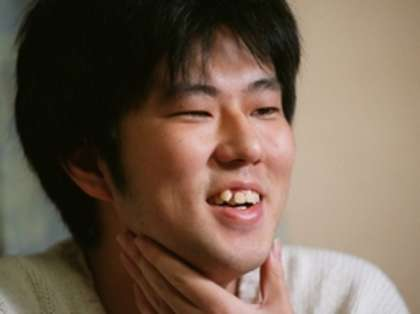

Who is Eiichiro Oda
Eiichiro Oda is a Japanese manga artist and the creator of the popular manga and anime series, One Piece. Born on January 1, 1975, in Kumamoto Prefecture, Japan, Oda began his career as a manga artist in 1992 with his debut work, Wanted!. He then went on to work as an assistant for several well-known manga artists, including Nobuhiro Watsuki, the creator of Rurouni Kenshin.
In 1997, Oda began serializing One Piece in Weekly Shōnen Jump, a popular manga magazine. The series quickly gained popularity and has since become one of the most successful manga series of all time. Oda's unique art style, complex characters, and intricate world-building have been praised by both fans and critics.
Over the years, Oda has won numerous awards for his work on One Piece, including the prestigious Tezuka Osamu Cultural Prize in 2014. He is known for his intense work ethic, often working long hours and sleeping only a few hours a night in order to meet tight deadlines. Despite this, he is also known for his sense of humor and love of puns, which he incorporates into the names and personalities of his characters.
Beyond his work on One Piece, Oda is also known for his philanthropic efforts, including donating millions of yen to disaster relief efforts in Japan and helping to fund the construction of a new children's hospital in Kumamoto. He is widely respected both within the manga industry and among his fans, and his work continues to inspire and entertain millions of readers and viewers around the world.